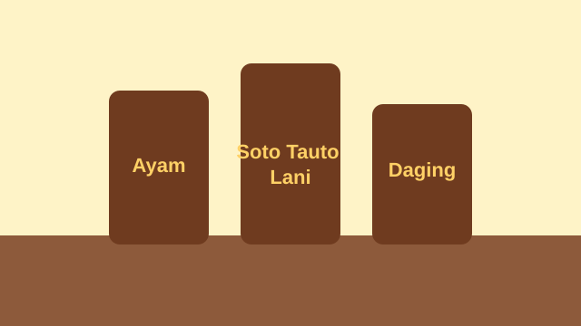

Soto Tauto Ayam
Soto khas Pekalongan dengan kuah tauto yang gurih dan daging ayam yang lembut.
Rp15.000
UMKM Pekalongan
Soto khas Pekalongan yang lezat dan menggugah selera.

Soto khas Pekalongan dengan kuah tauto yang gurih dan daging ayam yang lembut.
Rp15.000
Soto khas Pekalongan dengan kuah tauto yang gurih dan potongan daging sapi yang empuk.
Rp20.000
Perpaduan daging ayam dan daging sapi dalam kuah tauto yang gurih dan nikmat.
Rp25.000
Alamat: Jl. Raya Pekalongan No. 123, Pekalongan
Jam layanan:
Hubungi kami melalui: WhatsApp